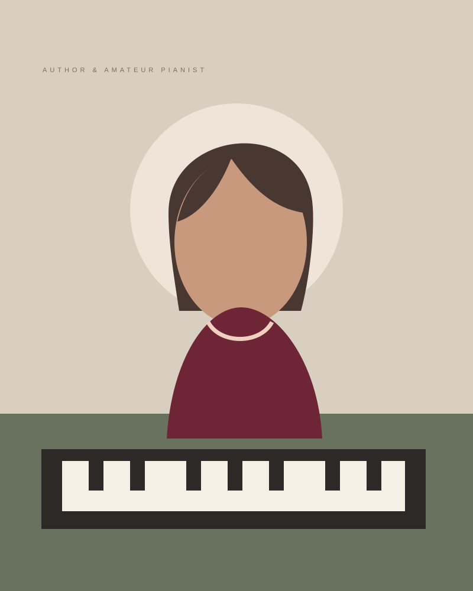

Внимание
Лучше услышать одну фразу глубоко, чем механически повторить страницу.
«Камертона» появились из простого желания говорить о музыке без спешки, оценок и дистанции между сценой и слушателем.

Меня зовут Ангелина. Я вернулась к фортепиано уже взрослой и быстро поняла: начинающему нужен не только список упражнений, но и спокойный разговор о том, как встроить музыку в обычную жизнь. Без обещаний мгновенного результата и без ощущения, что поздно задавать простые вопросы.
В «Камертонах» я соединяю личный опыт занятий, проверенные методические принципы и истории произведений. Консультации по скрипичным материалам проходят с преподавателями-практиками, а теоретические статьи проверяются по академическим учебникам.
Это независимый блог. Он не заменяет преподавателя, но помогает подготовиться к уроку, сформулировать вопрос и выбрать посильную следующую задачу. Все тексты написаны по-русски, иллюстрации созданы специально для проекта, а структура сайта задумана как компактная библиотека.
Мы стараемся объяснять музыкальные идеи простым языком, сохраняя точность терминов. В каждом материале есть действие, которое можно проверить у инструмента или во время слушания.
Лучше услышать одну фразу глубоко, чем механически повторить страницу.
Теория нужна, чтобы объяснять звучание и принимать музыкальные решения.
Регулярное короткое занятие ценнее редкого героического рывка.